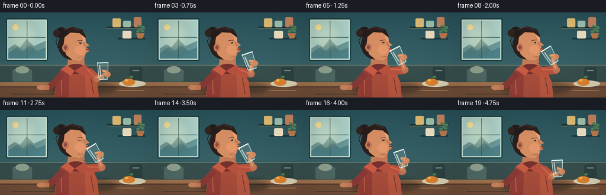
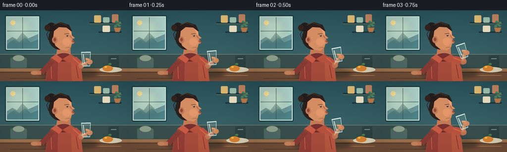

CODING AGENTS AS PIXEL WORLD MODELS
traex/GPT-5.6-Sol · motion_rationality_0029
点击播放 · 原生 RGB 像素
逐轮保存的候选
回放视频、检查图与代码变化。
每份候选均可单独播放。实际图片检查记录在下方工具轨迹中。
候选 01播放与检查图
点击播放 · 原生 RGB 像素


展开代码变化
--- 上一保存版本
+++ 本次保存版本
@@ -0,0 +1,319 @@
+"""Procedurally render a short, softly illustrated video of a person drinking juice."""
+
+from pathlib import Path
+import math
+import numpy as np
+from PIL import Image, ImageDraw, ImageFilter
+
+import artifact_io
+
+
+W, H, N = 256, 144, 20
+S = 4 # supersampling keeps the small portrait clean
+
+
+def q(v):
+ return int(round(v * S))
+
+
+def pts(seq):
+ return [(q(x), q(y)) for x, y in seq]
+
+
+def smooth(x):
+ x = max(0.0, min(1.0, x))
+ return x * x * (3.0 - 2.0 * x)
+
+
+def lerp(a, b, t):
+ return a + (b - a) * t
+
+
+def layer(base):
+ return Image.new("RGBA", base.size, (0, 0, 0, 0))
+
+
+def ellipse(d, box, fill, outline=None, width=1):
+ d.ellipse(tuple(q(x) for x in box), fill=fill, outline=outline, width=q(width) if outline else 1)
+
+
+def polygon(d, xy, fill, outline=None, width=1):
+ d.polygon(pts(xy), fill=fill)
+ if outline:
+ d.line(pts(list(xy) + [xy[0]]), fill=outline, width=q(width), joint="curve")
+
+
+def line(d, xy, fill, width=1, joint="curve"):
+ d.line(pts(xy), fill=fill, width=q(width), joint=joint)
+
+
+def rounded(d, box, radius, fill, outline=None, width=1):
+ d.rounded_rectangle(tuple(q(x) for x in box), radius=q(radius), fill=fill,
+ outline=outline, width=q(width))
+
+
+def make_background():
+ im = Image.new("RGBA", (W*S, H*S), (0, 0, 0, 255))
+ a = np.zeros((H*S, W*S, 4), dtype=np.uint8)
+ for yy in range(H*S):
+ y = yy / S
+ # softly lit blue-green cafe wall
+ k = y / H
+ a[yy, :, 0] = np.clip(40 + 23*k, 0, 255)
+ a[yy, :, 1] = np.clip(80 + 25*k, 0, 255)
+ a[yy, :, 2] = np.clip(88 + 20*k, 0, 255)
+ a[yy, :, 3] = 255
+ im = Image.fromarray(a, "RGBA")
+ d = ImageDraw.Draw(im, "RGBA")
+
+ # Window, hazy city silhouettes and morning light at left.
+ rounded(d, (10, 10, 81, 82), 3, (196, 220, 205, 255), (23, 58, 64, 220), 2)
+ rounded(d, (14, 14, 77, 78), 1, (171, 207, 198, 255))
+ polygon(d, [(14, 61), (25, 54), (34, 59), (45, 45), (57, 57), (77, 48), (77, 78), (14, 78)],
+ (105, 151, 151, 120))
+ polygon(d, [(14, 69), (29, 58), (39, 65), (50, 55), (62, 65), (77, 59), (77, 78), (14, 78)],
+ (76, 127, 133, 120))
+ line(d, [(45.5, 14), (45.5, 78)], (45, 90, 93, 190), 1)
+ line(d, [(14, 42), (77, 42)], (45, 90, 93, 190), 1)
+ ellipse(d, (21, 20, 31, 30), (248, 222, 143, 150))
+ # luminous bloom
+ glow = layer(im)
+ gd = ImageDraw.Draw(glow, "RGBA")
+ ellipse(gd, (12, 11, 65, 66), (255, 231, 171, 38))
+ glow = glow.filter(ImageFilter.GaussianBlur(q(8)))
+ im = Image.alpha_composite(im, glow)
+ d = ImageDraw.Draw(im, "RGBA")
+
+ # Right shelf and quiet kitchen details.
+ line(d, [(181, 25), (246, 25)], (25, 53, 57, 220), 3)
+ line(d, [(181, 27), (246, 27)], (122, 119, 91, 150), 1)
+ rounded(d, (190, 10, 204, 25), 2, (218, 183, 113, 255))
+ rounded(d, (208, 14, 221, 25), 2, (155, 189, 169, 255))
+ rounded(d, (226, 8, 239, 25), 2, (193, 130, 94, 255))
+ line(d, [(199, 44), (245, 44)], (25, 54, 58, 210), 3)
+ rounded(d, (207, 31, 222, 44), 2, (231, 218, 189, 255))
+ # potted trailing plant
+ polygon(d, [(230, 35), (244, 35), (241, 44), (233, 44)], (183, 119, 75, 255))
+ for x, y, ang in [(233, 32, -1), (237, 28, 0), (241, 31, 1), (235, 23, -1), (242, 25, 1)]:
+ ellipse(d, (x-3, y-2, x+3, y+2), (77, 132, 91, 245))
+ line(d, [(237, 36), (236, 24)], (68, 105, 72, 220), 1)
+
+ # backsplash/counter, deliberately defocused behind the person
+ polygon(d, [(0, 88), (256, 88), (256, 122), (0, 122)], (54, 77, 76, 255))
+ line(d, [(0, 89), (256, 89)], (119, 145, 130, 135), 1)
+ rounded(d, (21, 96, 54, 117), 3, (77, 103, 99, 255))
+ ellipse(d, (26, 91, 49, 103), (140, 158, 139, 180))
+ rounded(d, (219, 92, 240, 117), 3, (43, 64, 64, 255))
+ line(d, [(224, 98), (235, 98)], (114, 136, 126, 180), 2)
+
+ # Table with a warm front edge and gentle grain.
+ polygon(d, [(0, 118), (256, 118), (256, 144), (0, 144)], (112, 78, 56, 255))
+ polygon(d, [(0, 118), (256, 118), (256, 124), (0, 124)], (158, 113, 76, 255))
+ line(d, [(0, 126), (256, 126)], (73, 52, 43, 70), 1)
+ line(d, [(20, 138), (118, 138)], (75, 54, 44, 60), 1)
+ line(d, [(167, 132), (244, 132)], (187, 133, 85, 65), 1)
+
+ # Plate and orange, small context details.
+ ellipse(d, (201, 115, 246, 126), (216, 207, 178, 210))
+ ellipse(d, (207, 112, 228, 124), (218, 130, 48, 255))
+ ellipse(d, (211, 113, 216, 117), (245, 180, 71, 180))
+ line(d, [(218, 112), (220, 109)], (66, 106, 63, 255), 1)
+ ellipse(d, (219, 107, 225, 111), (75, 128, 73, 255))
+ return im
+
+
+BG = make_background()
+
+
+def glass_state(i):
+ """Position and tilt: lift, drink for several beats, then lower."""
+ if i <= 5:
+ u = smooth(i / 5.0)
+ return lerp(174, 161.5, u), lerp(99, 73.5, u), lerp(-2, -27, u), u
+ if i <= 14:
+ u = (i - 5) / 9.0
+ bob = 0.45 * math.sin(u * math.pi * 3)
+ return 161.5 + 0.3*math.sin(u*math.pi*2), 73.5 + bob, -27 - 5*math.sin(u*math.pi), 1.0
+ u = smooth((i - 14) / 5.0)
+ return lerp(161.5, 174, u), lerp(73.5, 99, u), lerp(-27, -3, u), 1-u
+
+
+def transform(cx, cy, angle, p):
+ x, y = p
+ a = math.radians(angle)
+ return (cx + x*math.cos(a) - y*math.sin(a),
+ cy + x*math.sin(a) + y*math.cos(a))
+
+
+def draw_person(base, i, drink_amt):
+ im = base.copy()
+ d = ImageDraw.Draw(im, "RGBA")
+ sip = smooth(min(1, max(0, (drink_amt-.25)/.75)))
+ head_dy = -0.8*sip
+
+ # Cast shadow anchors the figure to the table.
+ shadow = layer(im)
+ sd = ImageDraw.Draw(shadow, "RGBA")
+ ellipse(sd, (79, 116, 198, 139), (22, 27, 28, 95))
+ shadow = shadow.filter(ImageFilter.GaussianBlur(q(4)))
+ im = Image.alpha_composite(im, shadow)
+ d = ImageDraw.Draw(im, "RGBA")
+
+ # Torso: rust knit shirt, with simple folds and collar.
+ polygon(d, [(92, 144), (95, 113), (103, 96), (119, 89), (143, 89),
+ (158, 99), (167, 144)], (164, 75, 58, 255))
+ polygon(d, [(93, 144), (96, 113), (104, 98), (117, 93), (116, 144)], (145, 61, 53, 255))
+ polygon(d, [(143, 91), (155, 98), (164, 117), (167, 144), (145, 144)], (180, 85, 62, 255))
+ line(d, [(103, 113), (104, 139)], (210, 110, 79, 95), 1)
+ line(d, [(153, 110), (158, 138)], (101, 44, 45, 100), 1)
+ # neck and collar
+ polygon(d, [(116, 73+head_dy), (142, 73+head_dy), (143, 95), (126, 103), (113, 94)],
+ (189, 119, 84, 255))
+ ellipse(d, (112, 87, 145, 104), (115, 47, 44, 255))
+ polygon(d, [(113, 89), (126, 99), (119, 107), (103, 96)], (194, 89, 67, 255))
+ polygon(d, [(126, 99), (142, 89), (153, 97), (140, 107)], (178, 79, 60, 255))
+
+ # Back/down arm is softly resting on table.
+ line(d, [(106, 103), (91, 119), (83, 127)], (133, 57, 52, 255), 11)
+ line(d, [(83, 127), (68, 127)], (190, 119, 83, 255), 8)
+ ellipse(d, (62, 123, 76, 131), (198, 130, 92, 255))
+
+ # Drinking arm. It follows the glass hand with a bent-elbow trajectory.
+ cx, cy, ang, _ = glass_state(i)
+ hand = transform(cx, cy, ang, (3.0, 7.0))
+ shoulder = (149, 99)
+ # elbow goes out and down during the lift; no telescoping limb.
+ elbow = (164 + 8*sip, 112 - 15*sip)
+ line(d, [shoulder, elbow], (179, 80, 60, 255), 14)
+ line(d, [(147, 96), elbow], (206, 101, 74, 100), 2)
+ ellipse(d, (elbow[0]-6, elbow[1]-6, elbow[0]+6, elbow[1]+6), (186, 112, 80, 255))
+ line(d, [elbow, (hand[0]-2, hand[1]+2)], (191, 121, 85, 255), 8)
+ line(d, [(elbow[0]-1, elbow[1]-2), (hand[0]-3, hand[1])], (226, 155, 110, 150), 2)
+
+ # Head shadow behind hair.
+ hair = (42, 31, 28, 255)
+ ellipse(d, (98, 31+head_dy, 146, 80+head_dy), hair)
+ polygon(d, [(100, 45+head_dy), (105, 30+head_dy), (122, 24+head_dy),
+ (139, 29+head_dy), (145, 41+head_dy), (139, 50+head_dy)], hair)
+ # loose bun and stray wisps
+ ellipse(d, (94, 25+head_dy, 113, 43+head_dy), (35, 28, 27, 255))
+ ellipse(d, (90, 29+head_dy, 102, 42+head_dy), (49, 34, 30, 255))
+ line(d, [(102, 35+head_dy), (94, 49+head_dy), (98, 60+head_dy)], (29, 25, 24, 210), 1)
+ line(d, [(108, 30+head_dy), (119, 25+head_dy), (135, 30+head_dy)], (86, 56, 43, 160), 1)
+
+ # Face profile facing right.
+ skin = (207, 137, 96, 255)
+ face = [(109, 42+head_dy), (119, 34+head_dy), (134, 35+head_dy),
+ (143, 42+head_dy), (145, 51+head_dy), (151, 56+head_dy),
+ (145, 59+head_dy), (151, 63+head_dy), (149, 67+head_dy),
+ (145, 68+head_dy), (143, 75+head_dy), (135, 82+head_dy),
+ (122, 80+head_dy), (112, 72+head_dy), (107, 58+head_dy)]
+ polygon(d, face, skin)
+ # ear and warm cheek modeling
+ ellipse(d, (105, 53+head_dy, 116, 67+head_dy), (190, 116, 83, 255))
+ ellipse(d, (108, 56+head_dy, 113, 63+head_dy), (133, 72, 65, 160))
+ ellipse(d, (126, 56+head_dy, 143, 72+head_dy), (221, 146, 102, 90))
+ polygon(d, [(137, 38+head_dy), (144, 43+head_dy), (145, 51+head_dy),
+ (141, 48+head_dy)], (228, 156, 111, 100))
+
+ # Brow, eye and nose definition. Blink once while swallowing.
+ line(d, [(130, 48+head_dy), (139, 47+head_dy)], (70, 43, 35, 255), 1)
+ blink = (i == 11)
+ if blink:
+ line(d, [(132, 52+head_dy), (138, 53+head_dy)], (61, 43, 37, 255), 1)
+ else:
+ ellipse(d, (134, 50+head_dy, 137.5, 53+head_dy), (39, 35, 32, 255))
+ ellipse(d, (135, 50+head_dy, 136, 51+head_dy), (245, 241, 215, 255))
+ line(d, [(141, 51+head_dy), (144, 56+head_dy), (148, 57+head_dy)], (151, 87, 67, 180), 1)
+ # parted lips meet the glass
+ line(d, [(145, 62+head_dy), (151, 63+head_dy)], (116, 51, 52, 255), 2)
+ line(d, [(146, 65+head_dy), (150, 65+head_dy)], (143, 62, 59, 220), 1)
+ line(d, [(132, 76+head_dy), (141, 75+head_dy)], (157, 91, 69, 120), 1)
+ # neck swallow cue during the hold
+ if 7 <= i <= 14:
+ y = 84 + 0.8*math.sin((i-7)*math.pi/2)
+ line(d, [(139, y), (142, y+2)], (134, 74, 61, 120), 1)
+ return im
+
+
+def draw_glass_and_hand(im, i):
+ cx, cy, ang, amt = glass_state(i)
+ d = ImageDraw.Draw(im, "RGBA")
+ outer_local = [(-9, -14), (9, -14), (7, 14), (-7, 14)]
+ outer = [transform(cx, cy, ang, p) for p in outer_local]
+ inner_local = [(-7.5, -12.5), (7.5, -12.5), (5.8, 12), (-5.8, 12)]
+ inner = [transform(cx, cy, ang, p) for p in inner_local]
+
+ # The juice remains level with gravity while the tumbler tilts.
+ glass_layer = layer(im)
+ mask = Image.new("L", im.size, 0)
+ md = ImageDraw.Draw(mask)
+ md.polygon(pts(inner), fill=220)
+ liquid = layer(im)
+ ld = ImageDraw.Draw(liquid, "RGBA")
+ # level rises toward the drinking rim when tilted; it slowly decreases as drunk
+ consumed = max(0, min(1, (i-5)/9)) if i <= 14 else 1
+ if 5 <= i <= 14:
+ surf = cy - 6.7 + 2.0*consumed
+ else:
+ surf = cy - 6.0 + 6.0*(1-amt) + 2.0*consumed
+ ld.rectangle((0, q(surf), W*S, H*S), fill=(238, 145, 31, 220))
+ # subtle richer juice at bottom
+ ld.rectangle((0, q(surf+9), W*S, H*S), fill=(224, 111, 20, 95))
+ liquid.putalpha(Image.composite(liquid.getchannel("A"), Image.new("L", im.size, 0), mask))
+ glass_layer = Image.alpha_composite(glass_layer, liquid)
+ gd = ImageDraw.Draw(glass_layer, "RGBA")
+ # body tint, edges, base and elliptical rim
+ polygon(gd, outer, (197, 231, 229, 38), (224, 246, 242, 205), 1)
+ top_l = transform(cx, cy, ang, (-9.5, -14))
+ top_r = transform(cx, cy, ang, (9.5, -14))
+ line(gd, [top_l, top_r], (240, 253, 248, 230), 2)
+ b_l = transform(cx, cy, ang, (-7, 14))
+ b_r = transform(cx, cy, ang, (7, 14))
+ line(gd, [b_l, b_r], (184, 220, 219, 220), 2)
+ h1 = transform(cx, cy, ang, (-5.6, -10))
+ h2 = transform(cx, cy, ang, (-4.2, 8))
+ line(gd, [h1, h2], (255, 255, 241, 165), 2)
+ im = Image.alpha_composite(im, glass_layer)
+
+ # Palm and fingers wrap over the near face of the tumbler.
+ d = ImageDraw.Draw(im, "RGBA")
+ wrist = transform(cx, cy, ang, (5, 8))
+ palm = transform(cx, cy, ang, (7, 6))
+ ellipse(d, (palm[0]-5.5, palm[1]-5, palm[0]+5.5, palm[1]+5), (201, 132, 91, 255))
+ # three curved gripping fingers aligned to the glass
+ for off in (1, 4, 7):
+ p1 = transform(cx, cy, ang, (-1, off))
+ p2 = transform(cx, cy, ang, (7, off+1))
+ line(d, [p1, p2], (216, 145, 99, 255), 2)
+ thumb1 = transform(cx, cy, ang, (6, 1))
+ thumb2 = transform(cx, cy, ang, (-1, -1))
+ line(d, [thumb1, thumb2], (226, 153, 104, 255), 3)
+ ellipse(d, (wrist[0]-2, wrist[1]-2, wrist[0]+2, wrist[1]+2), (205, 134, 91, 220))
+ return im
+
+
+def render(i):
+ cx, cy, ang, amt = glass_state(i)
+ im = draw_person(BG, i, amt)
+ im = draw_glass_and_hand(im, i)
+
+ # A restrained vignette gives depth without obscuring the action.
+ arr = np.asarray(im.convert("RGB"), dtype=np.float32)
+ hh, ww = arr.shape[:2]
+ yy, xx = np.mgrid[0:hh, 0:ww]
+ nx = (xx - ww*0.52)/(ww*0.72)
+ ny = (yy - hh*0.48)/(hh*0.78)
+ vig = np.clip(1.035 - 0.16*(nx*nx + ny*ny), 0.79, 1.03)[..., None]
+ arr = np.clip(arr*vig, 0, 255).astype(np.uint8)
+ out = Image.fromarray(arr).resize((W, H), Image.Resampling.LANCZOS)
+ return np.asarray(out, dtype=np.uint8)
+
+
+def main():
+ frames = np.stack([render(i) for i in range(N)], axis=0)
+ artifact_io.save(frames, Path(__file__).resolve().parent)
+
+
+if __name__ == "__main__":
+ main()
可观测工具轨迹
实际执行的命令与返回图片。
命令 1exit 0
/bin/bash -lc "cat prompt.txt && printf '\\n---RULES---\\n' && cat GENERATION_RULES.md && printf '\\n---SPEC---\\n' && cat task_spec.json"
命令 2exit 0
/bin/bash -lc "find . -maxdepth 2 -type f -printf '%p\\n' | sort"
命令 3exit 0
/bin/bash -lc "sed -n '1,240p' artifact_io.py"
命令 4exit 0
/bin/bash -lc 'python generate.py'
命令 5exit 0
/bin/bash -lc "python - <<'PY'
from PIL import Image
im=Image.open('inspection.png'); print(im.size)
PY
ls -lh pixels.npz index.html inspection.png frames/00.png frames/10.png frames/19.png"命令 6exit 0
/bin/bash -lc "python - <<'PY'
import numpy as np
from PIL import Image
fs=np.stack([np.array(Image.open(f'frames/{i:02d}.png')) for i in range(20)])
print(fs.shape, fs.dtype, fs.min(), fs.max())
print('mean abs frame deltas:', np.round(np.abs(np.diff(fs.astype(float),axis=0)).mean((1,2,3)),2))
print('changed pixels:', np.round((np.any(np.diff(fs,axis=0)"'!=0,axis=3)).mean((1,2))*100,1))
# JPEG contact sheet smaller ascii rough colors maybe not needed
PY'保存候选 1 份；完成命令 6 次；可验证图片返回 0 张。原始 API 响应与完整日志保留在本地。